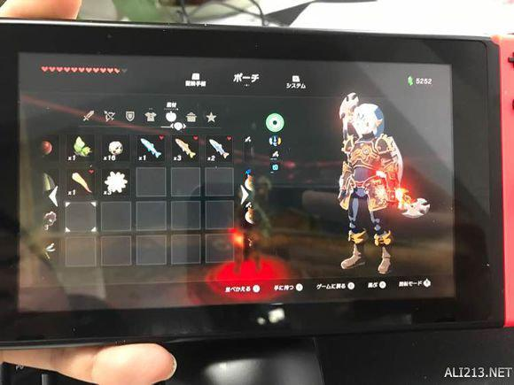
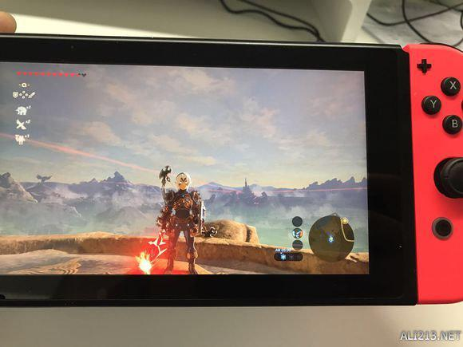
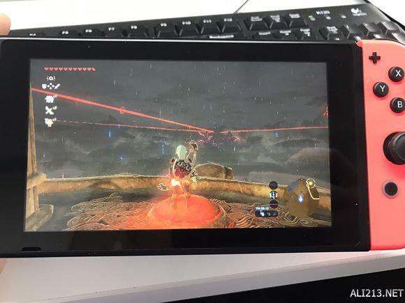
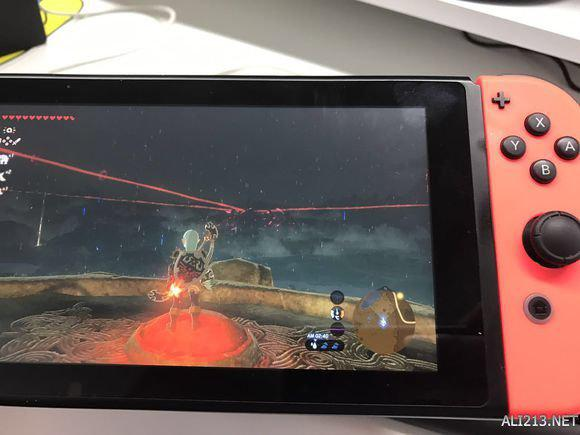

在塞尔达传说荒野之息有很多道具需要玩家完成收集，那么陨石碎片在哪收集？一些玩家找不到位置，下面给诸位分享的就是塞尔达传说荒野之息陨石碎片入手方法，一起来看下具体的位置吧。
陨石碎片入手方法

首先去新手村的天空塔。

然后去点一堆火，选择黑夜。
好了，现在是晚上9点，看着城堡的方向开始等着吧。

凌晨1点后，流星出现，标记飞过去捡就好了，你可以重复以上步骤，用不了多久，十几颗流星就有了。
